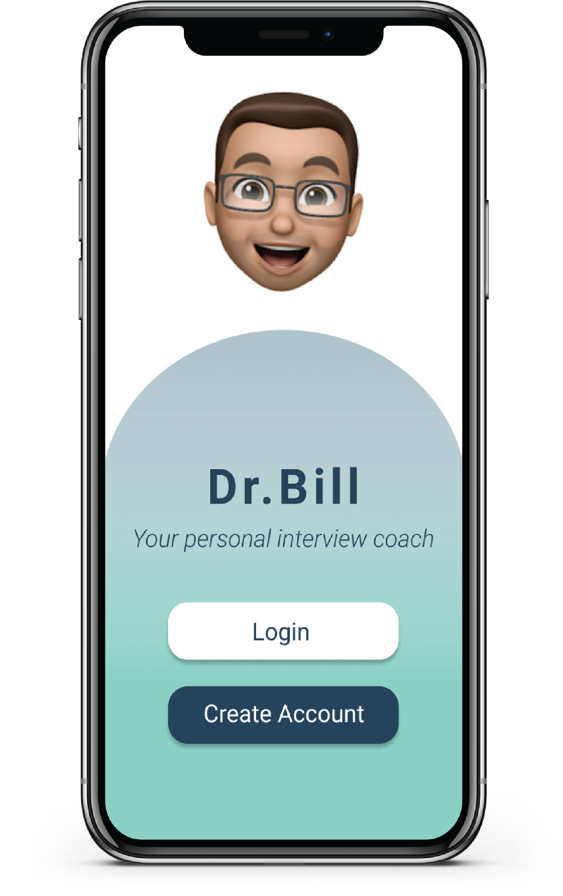
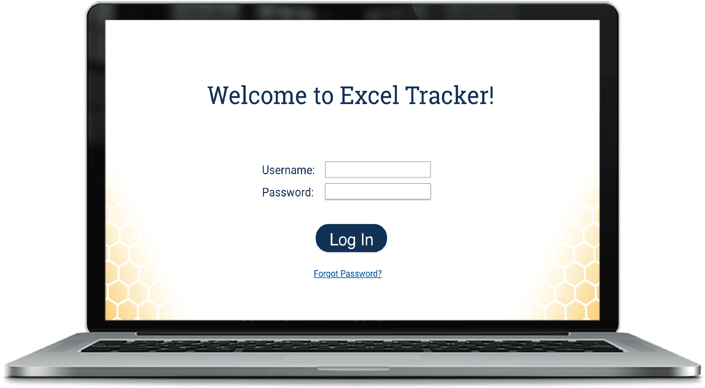
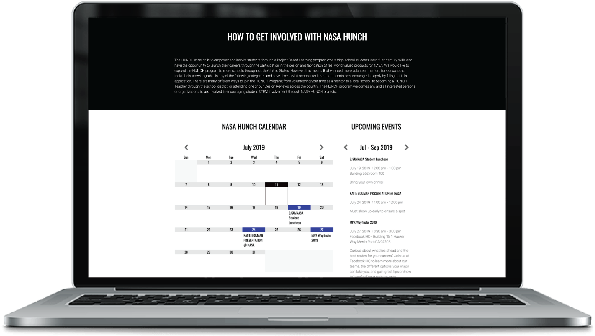
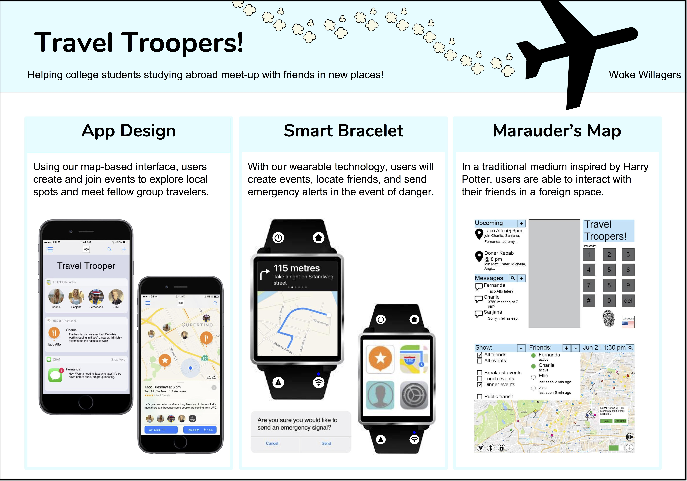
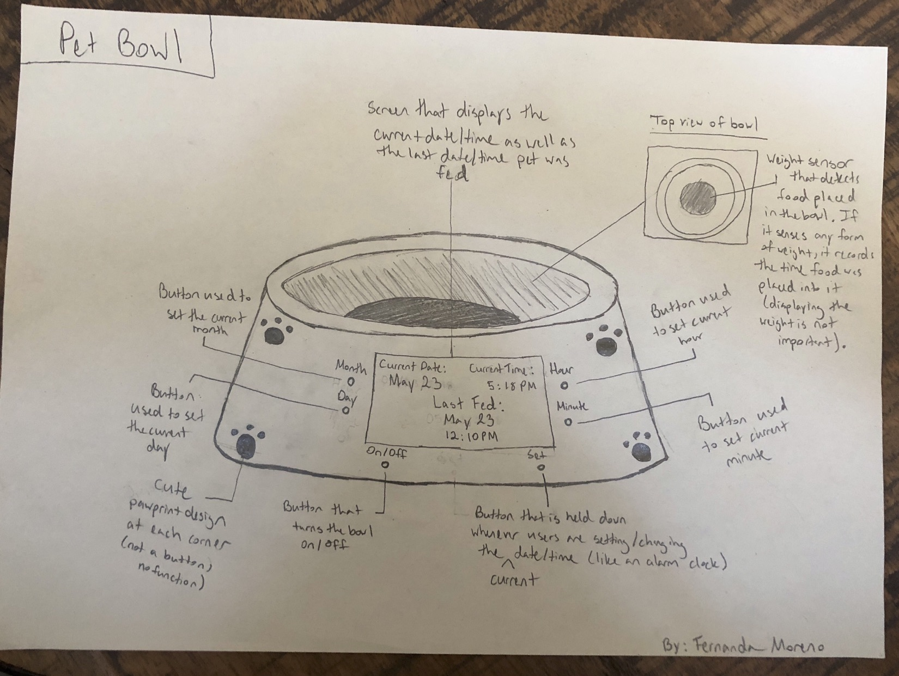
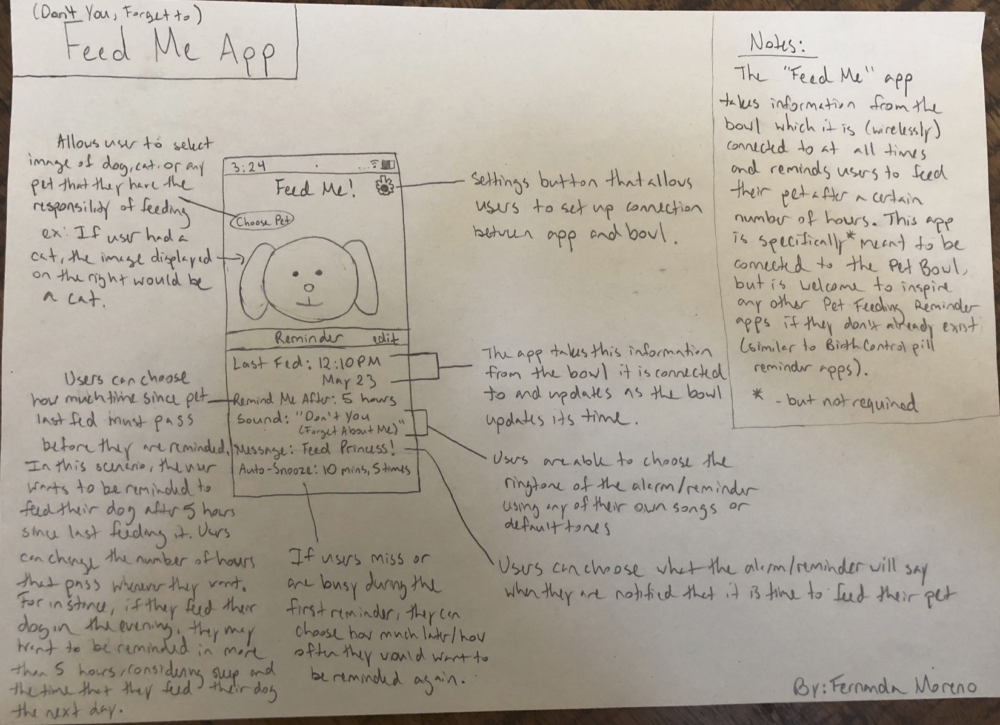

Dr. Bill Interview Prep App Prototype (Spring 2020)
Skills used: Figma, Interaction Design
In my Interaction Design class, I worked with a team to design a voice tech mobile application aimed at helping students prepare for job interviews. The face of our interview prep voice tech app is Dr. Bill, a lively animoji character that aims to represent a real interviewer. On the app, users can upload their resume, start a mock interview at any time, and receive feedback on how well they answered each question and how they can improve. During the mock interviews, Dr. Bill asks users general behavioral questions as well as technical questions that are tailored to the user's resume. As a UX and interaction designer in this project, I took part in designing the interview and feedback logistics, conducting heuristic evaluations, and designing the app screens for the feedback portion of the interview experience. When the semester ended, I continued to redesign the prototype's introductory and interview screens in an attempt to further develop my design skills. Check out our prototype here!
Excel Program Tracker (Fall 2019 & Spring 2020)
Skills used: Adobe XD, Paper Prototyping, User Experience Research & Design
For our Junior Design project, my team and I have designed and developed a web application system for the Excel Program at Georgia Tech to help faculty and administrators track the progress of students in the program. Our team spent the Fall 2019 semester meeting with the Career Development Coordinator of the Excel Program, conducting user research, writing reports on our observations, and designing a potential tracking system. As a user experience designer for our prototype, my role was to design the layout and interactions on the page that displays the list of all users as well as the page for individual instructors. In the Spring 2020 semester, my team and I worked on implementing the Excel Program Student Progress Tracker with ReactJS. Feel free to check out our prototype, GitHub repository, and the video I put together which describes the project in detail.
NASA HUNCH Calendar Section (Summer 2019)
Skills used: WordPress, HTML, CSS, Adobe XD
As a software development and design intern at NASA Ames Research Center, one of my tasks was to design a calendar section for the NASA HUNCH website in order to increase student awareness of program events throughout the nation. I chose to include both a grid and list view of the calendar so that people are able to see how eventful the current month is in the grid view, and details of the upcoming events in the list view. The calendar was implemented through a WordPress plug-in and customized with CSS so that the font and colors matched the rest of the website. As events are added to the NASA HUNCH Google Calendar, the calendar and upcoming events section will update automatically.
Note: I do not own any content on the NASA HUNCH website.
Travel Troopers App & Map Prototype (Summer 2018)
Skills used: Adobe XD, physical model, Wizard of Oz Prototyping
In 2018, I studied abroad on Georgia Tech's Barcelona Summer Program and took a class on User Interface Design. For our final project, my team and I created a prototype of a mobile app and augmented reality map interface that helped groups traveling abroad find the best local restaurants as recommended by their friends. In addition to recommendations, our app and map interfaces included the ability to provide directions to these locations, facilitate communication, and share photos among groups of friends.

Futuristic Pet Bowl (Summer 2018)
Skills used: Sketching, paper interface
In my UI Design class, I was assigned an open-ended individual project where I had to design, layout, and mockup a Family Messaging System that a busy family could use to communicate with each other across time and space. My idea was to create something that would allow a family to communicate in terms of when their pet was last fed or if it had already been fed by another family member. The invention I designed was a futuristic pet bowl that recorded the time that food was last placed into the pet's bowl so members of the family would know if their pet needed their food to be served. Below you will find the design sketches for this project.
 